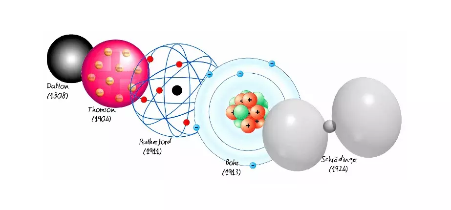
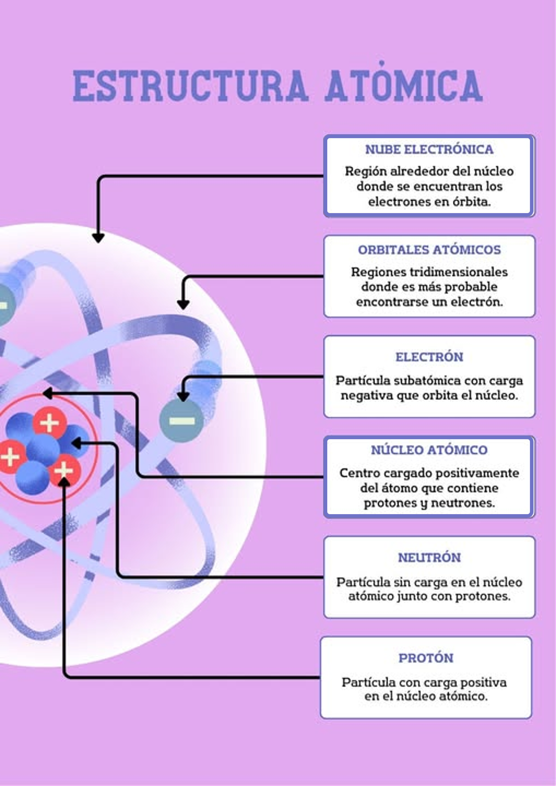
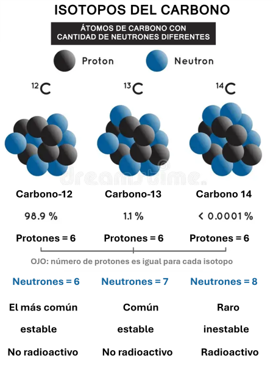
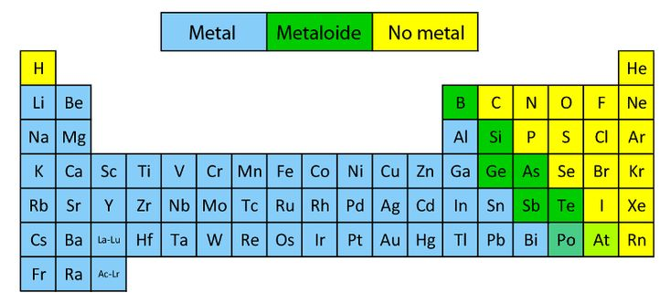

Elementos de Química
Comprender la materia - Cuidar la vida
Clase 1: Átomos, Elementos y Tabla Periódica
Comprender la materia - Cuidar la vida
Clase 1: Átomos, Elementos y Tabla Periódica
Aportes de la química a la salud:
Se basa en principios matemáticos que describen el comportamiento del electrón y considera al átomo como un sistema energético.


| Partícula | Símbolo | Carga | Masa (uma) | Ubicación |
|---|---|---|---|---|
| Protón | p⁺ | +1 | ≈1 | Núcleo |
| Neutrón | n⁰ | 0 | ≈1 | Núcleo |
| Electrón | e⁻ | -1 | ≈0 (1/1836) | Orbitales |
Átomos con igual número de protones (Z) pero diferente número de neutrones y, por tanto, distinto número de masa (A).

Un elemento es una sustancia pura formada por átomos con el mismo número de protones (Z). Se representa mediante un símbolo (ej. H, Na, Fe).

| Grupo | Características | Ejemplos |
|---|---|---|
| Metales | Conductores, maleables, óxidos básicos | Na, Fe, Cu, Au, Ag |
| No metales | Aislantes, óxidos ácidos | O, N, Cl, S |
| Metaloides | Semiconductores | Si, Ge, As, Sb |
| Gases nobles | Muy estables, inertes | He, Ne, Ar, Kr |
Haz clic en cada nodo para desplegar u ocultar sus ramas.
Haz clic en la tarjeta para voltearla y ver la respuesta. Luego califícate con honestidad.
Ingresa los datos de dos isótopos (masa y abundancia en %):
La química de los átomos y elementos tiene múltiples usos en el ámbito sanitario. A continuación, algunos ejemplos:
| Elemento | Símbolo | Función principal | Deficiencia |
|---|---|---|---|
| Calcio | Ca | Formación de huesos, contracción muscular, coagulación | Osteoporosis, tetania |
| Hierro | Fe | Transporte de oxígeno (hemoglobina) | Anemia ferropénica |
| Sodio | Na | Equilibrio osmótico, impulso nervioso | Hiponatremia |
| Potasio | K | Función muscular y cardíaca | Hipopotasemia |
| Yodo | I | Síntesis de hormonas tiroideas | Bocio, hipotiroidismo |
"Z son los protones, A es masa total,
neutrones se restan, y electrones son Z en neutral."
He, Ne, Ar, Kr, Xe, Rn → "Helio, Neón, Argón, Kriptón, Xenón, Radón"
Haz clic en cada término para ver su definición:
Error: "El número atómico es la masa total del átomo."
Error: "Todos los isótopos son radiactivos."
Error: "El número de electrones es siempre igual al número de neutrones."
Error: "El silicio es un metal."
Error: "La masa atómica es siempre un número entero."
Se mostrarán 5 preguntas al azar de un total de 15. Al finalizar, podrás cargar una nueva ronda.